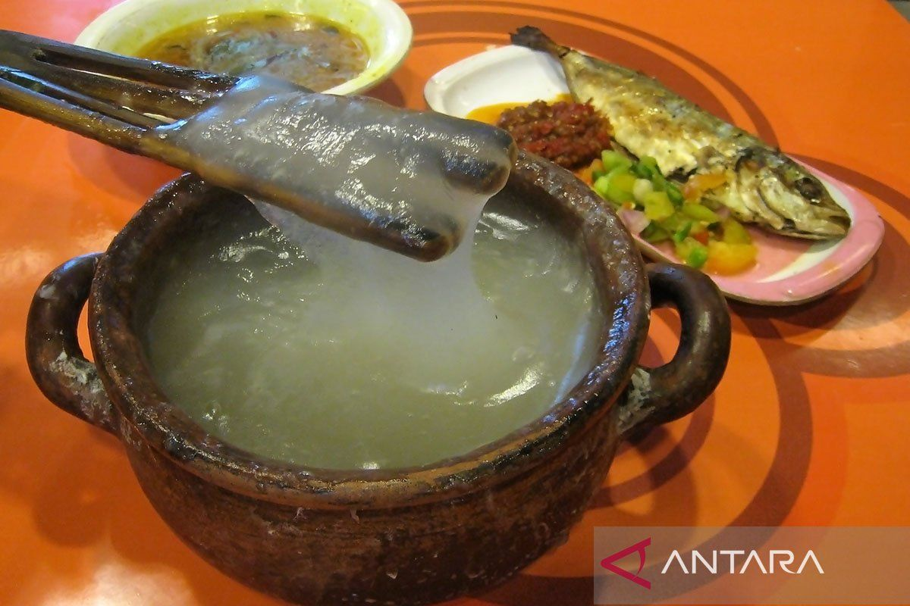

🐟 Masakan Papua & Maluku
🍚 Papeda

- Asal: Papua & Maluku
- Bahan utama: sagu
- Cara penyajian: disiram kuah ikan kuah kuning
- Ciri khas: tekstur kenyal, rasa netral menyatu dengan kuah
🐟 Ikan Kuah Kuning

- Asal: Maluku
- Bahan utama: ikan tongkol / kakap
- Bumbu: kunyit, bawang, cabai, jeruk nipis
- Ciri khas: kuah kuning segar, rasa asam pedas ringan
🍽️ Ikan Bakar Rica

- Asal: Papua & Maluku
- Bahan utama: ikan laut segar
- Bumbu: rica-rica, jeruk nipis, bawang
- Ciri khas: rasa pedas menyengat dan segar